Hexo Tranquilpeak Blog 🏡
- 안녕하세요, Blog 주인장 PETER입니다.👋 이 블로그는 정적인(Static) Site를 만들어주는 Hexo라는 Node.js 기반 프레임워크로 만들어졌는데요, Hexo는 2012년에 Tommy Chen이라는 대만 개발자님이 만든.. 2017-20년 쯤을 풍미했던 10년도 더 된 할아버지👴🏻 프레임워크가 됐네요.
- 저도 Next.js로 블로그를 만들까.. 하다가, 오래되긴 했지만 빠르게 이쁜 블로그를 뚝딱 만들 수 있다는 건 아무래도 큰 장점은 맞는 것 같아 다시 Hexo로 돌아왔어요. 다시 블로그를 만들다 이왕 알게된 기능 설정 방법들에 대해 정리해 튜토리얼을 써봅니다. :)
- 이 글은, 이 블로그에 적용된 Tranquilpeak 이라는 테마를 중점적으로 설명합니다! Hexo를 설치하고 github.io blog로 만드는 방법, Hexo 테마 설정하는 방법까지는 아래 링크 참조해주세요 :) ChatGPT같은 LLM에게 물어보시면 hexo 명령어에 대해서도 쉽게 아실 수 있습니다.
💬 Disqus Comment 설정
Disqus 댓글을 설정하기 위해서는 아래와 같이 tranquilpeak의
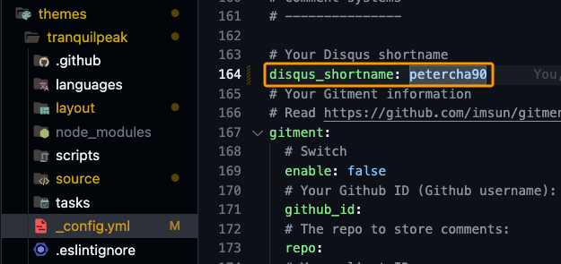_config.yml파일의 disqus_shortname 부분에 써 줄, shortname이 필요합니다. 아래는 Disqus에서 등록할 shortname을 찾는 방법입니다.
Disqus에 가입이 되었다면, 로그인 후 우상단에
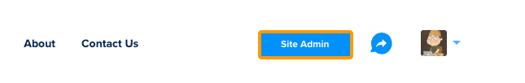Site Admin을 클릭해주세요.
그 다음, 아래 그림과 같이 Site를 선택합니다. 생성한 사이트가 없다면,
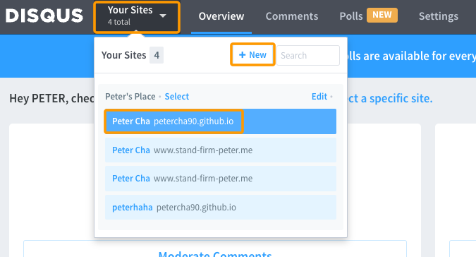+ New를 클릭해주세요.
새로 생성을 하는 경우 아래와 같이
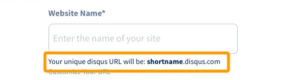Website Name에 입력할 부분이 아래 적혀있는 설명과 같이 shortname으로 사용되게 됩니다.
이미 사이트를 생성했는데 기억이 안나는 경우는, 사용하고자 하는 사이트를 클릭하시고 아래와 같이 Settings를 클릭하시면 아래와 같이 Shortname을 확인할 수 있으니, 복사해서 쓰시면 됩니다!
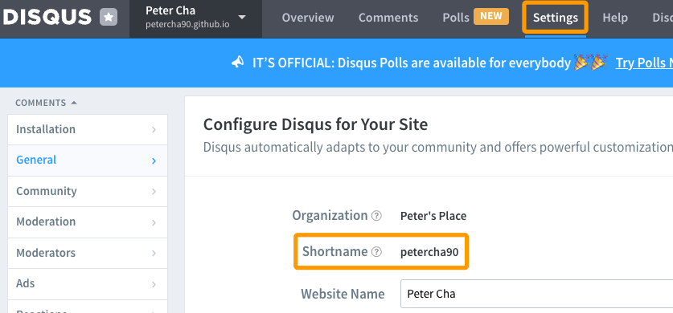
번외로 아래와 같이 Disqus를 설치하면, 아래와 같은 리액션투표 기능이
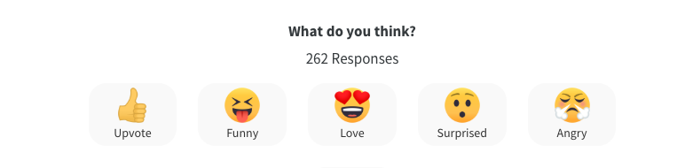(쓸데없이)제공됩니다. 이 기능을 disable 시키고 싶으시다면,
disqus에서 해당 site를 클릭하면 나오는 화면 좌측 메뉴 중
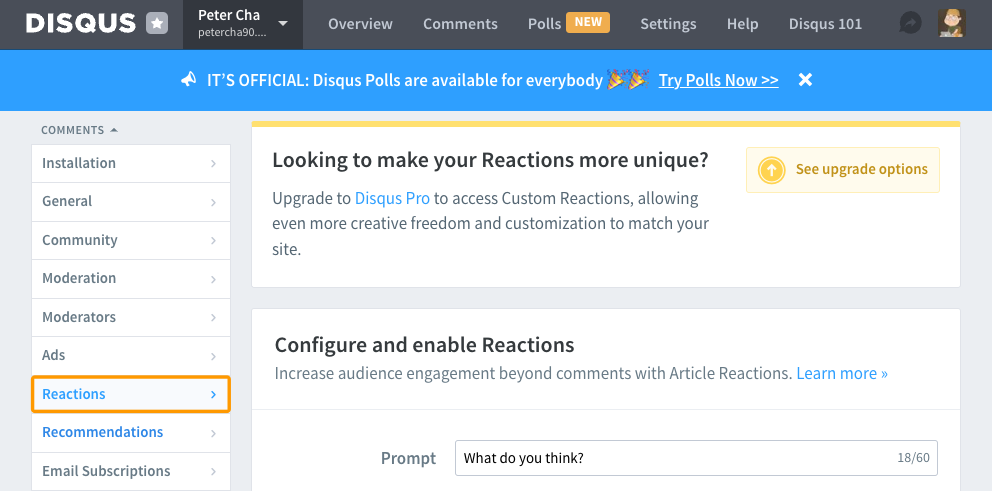emotions가 있으니 클릭하시고 가장 아래에서 확인 할 수 있는 “Turns Reactions off“를 클릭해주세요.
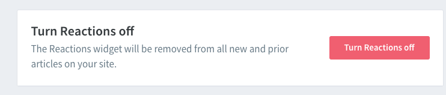
✍️ Custom Font 적용하기
핵심은 아래 사진과 같이
_variables.scss파일을 수정하는 것입니다! 경로는 themes/tranquilpeak/source/_css/utils/_variables.scss 입니다.:)저는 나눔고딕을 사용하고 싶어서 $nanum 이라는 변수를 만들어주고, 이름을 NanumGothic이라고 설정해준 뒤, 게시글(Post)과 관련된 모든 부분에는 모두 nanum을 쓰도록 아래와 같이 설정해 주었습니다.
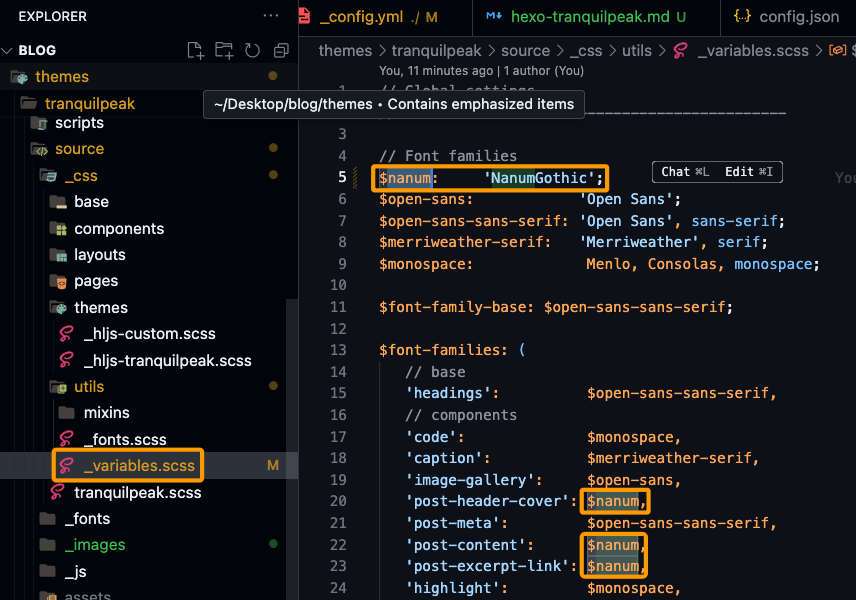
사용하고자 하는 폰트의 영어이름은, Google Fonts에서 검색해서 나오는 폰트 이름을 띄어쓰기 없이 검색했을 때 나온다면 적용이 되는 것으로 보였어요.
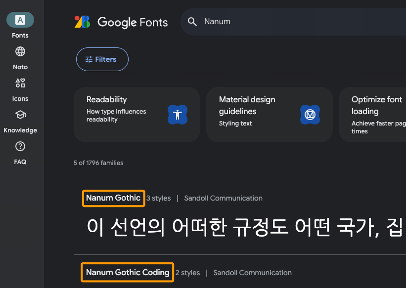내가 적용하고 싶은 폰트가 Google Fonts에 없는 로컬의 폰트를 적용하고 싶다?!면, 폰트 설정에 관련된 Issue 확인 결과,
- tranquilpeak/source/_fonts 폴더 아래에 사용하려는 폰트의
.ttf파일을 추가해주고 - tranquilpeak/source/_css/utils/_fonts.scss 파일에 로컬의 폰트를 import 한 뒤에 사용하라고 Tranquilpeak 테마를 만든 Louis Barranqueiro님이 직접 가이드 해주고 있으니 이 또한 참고해주세요. :)
- tranquilpeak/source/_fonts 폴더 아래에 사용하려는 폰트의
아참, tranquilpeak/source/ 경로 이하 파일을 수정한 경우, tranquilpeak 디렉토리 내에서 꼭 `npm run prod`를 실행해서 build를 다시 해야 적용되니, 이 부분도 놓치지 마세요!
🧑🏻💻 Favicon 설정하기
자, 이제 아래와 같이 브라우저에서 탭 좌측에 위치하는 아이콘인 favicon을 설정하는 방법에 대해 알아보겠습니다.🦁 favicon용 아이콘 만들어주는 사이트들은 다양한데요, 저는 favicon.io에서 만들었어요!
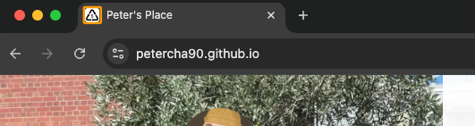
만드신 favicon 이미지는 themes/tranquilpeak/source/_images/ 폴더 아래에 favicon용 이미지를 넣어놓고, tranquilpeak/_config.yml 파일의 아래
favicon:영역에 favicon 파일의 path을 넣어주세요.tranquilpeak/_config.yml - yml
...
# and use relative url : `your-image.png`
cover_image: cover.webp
# Your favicon located in folder `source/_images/` ..
favicon: assets/images/favicon.ico
# Display an image gallery at the end of a post ...
image_gallery: true
...cmd나 bash/Command 창에서 tranquilpeak 테마가 있는 path로 이동하신 후,
npm run prod를 한 번 더 실행해주시면 tranquilpeak/source/assets/images/ 아래에, favicon.ico가 생성된 것을 확인하실 수 있어요. 이 상태에서hexo g -d명령어로 배포해주시면 됩니다!
제대로 설정했는데도, 로컬환경에서 favicon이 안보인다면?! 👀
- Favicon은 Deploy(
hexo d)를 한 다음에 Deploy된 저장소(Github이라면 Github repo)에 올라간 뒤에, 해당 저장소의 URL로 favicon 이미지를 받아오는 방식이라,hexo s로 시작해서 확인하는 로컬에는 확인을 못하는게 정상입니다. 배포 후 Favicon이 잘 설정됐는지 확인하시면 될 것 같습니다. :)
☕️ Buy me a coffee
Buy me a coffee는 Creator들이 간단하게 후원을 받을 수 있도록 해주는 서비스 입니다 :) 가입을 하면 나만의 배너를 만들 수 있고, 그 링크를 통해 다른 사람들이 고마움을 표현하고 Creator를 후원할 수 있게 해주는. 거기다 무료인 🐐(GOAT) 서비스죠.
가입을 진행하시고 로그인을 하셨다면, 좌측 메뉴에서
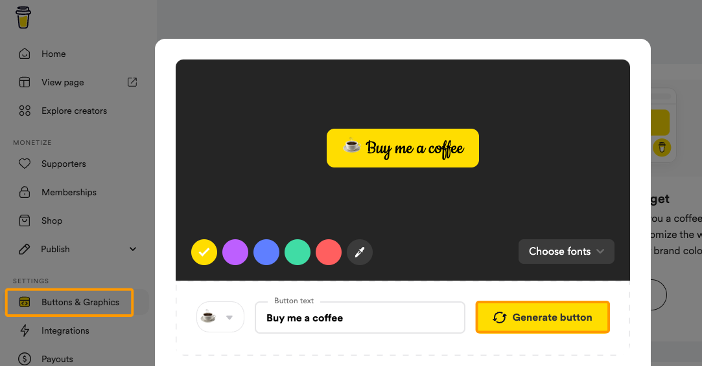Buttons & Graphics를 클릭해주시면 나만의 버튼을 꾸밀 수 있는 창이 뜹니다. 설정을 다 하셨다면,Generate button을 클릭해주세요.
그 다음에 나오는 화면에서 아래와 같이
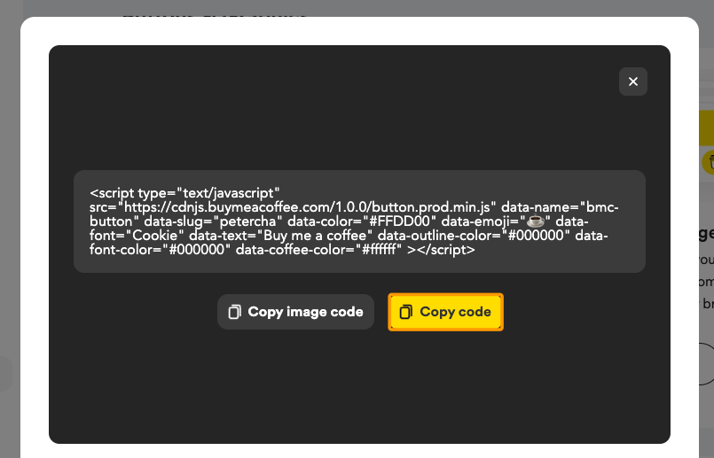Copy code버튼을 클릭하셔서 script 코드를 복사해줍니다.
이제 복사한 이 코드를 원하는 위치에 넣어주면 되는데요, 저같은 경우 제가 쓰게될 모든 Post 가장 하단에 댓글란 바로 위에 위치했으면 해서, themes/tranquilpeak/layout/_partial/post.ejs 파일에 아래와 같이 Disqus 댓글 코드 앞에 넣어줬습니다.
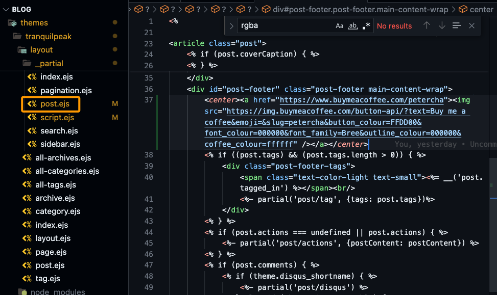
Thank you!
- 자, 여기까지 이 블로그가 만들어진 Hexo Tranquilpeak 테마의 다양한 설정법에 대해 알아보았습니다! 그 외에도, 배경화면을 약간 투명으로 설정하는 방법, sidebar customization하는 방법 등, 혹시 제 블로그를 보시면서 궁금한 기능이 있으시다면 댓글로 문의주시면 알려드리도록 할게요 :)
- 제 블로그 첫 번째 글을 읽어주셔서 감사합니다!🙇🏻♂️